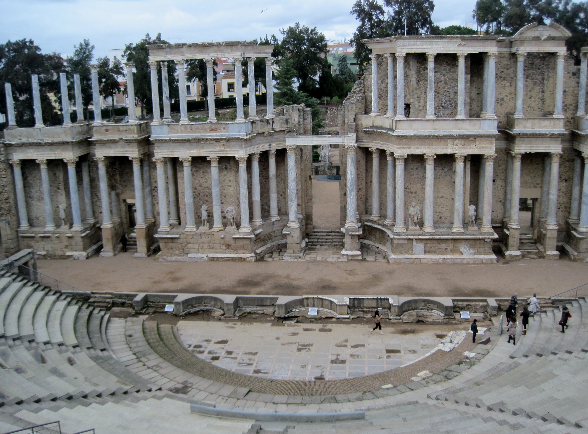

THEATRE GREC OU ROMAIN ?

Ce théâtre est-il grec ou romain ?
Réponse détaillée : C’est ici un magnifique exemple de théâtre grec, reconnaissable notamment au fait que l’orchestra est ronde.

Ce théâtre est-il grec ou romain ?
Réponse détaillée : Cette image montre un théâtre romain ! Pour le reconnaître, regarde l’orchestra, qui est en demi-cercle. En plus, le mur derrière les acteurs est bien plus imposant, et leur permettait de l’utiliser pour y accrocher les décors de la pièce.